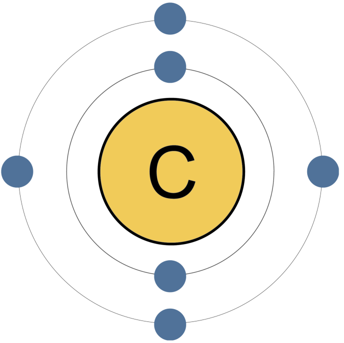

Углерод
Углерод (от латинского carbo «уголь») — химический элемент ; он имеет символ C и атомный номер 6. Он неметаллический и четырехвалентный , что означает, что его атомы способны образовывать до четырех ковалентных связей из-за его валентной оболочки , содержащей 4 электрона. Он принадлежит к 14 группе периодической таблицы .Углерод составляет около 0,025 процента земной коры.В природе встречаются три изотопа : 12 C и 13 C являются стабильными, а 14 C представляет собой радионуклид , распадающийся с периодом полураспада 5700 лет. Углерод — один из немногих элементов, известных с древности .
Углерод в виде древесного угля применялся в глубокой древности для выплавки металлов. Издавна известны алмаз и графит. Элементарная природа углерода установлена во 2-й половине 18 в.

Углерод – один из важнейших источников энергии. Графит используется как замедлитель нейтронов в ядерных реакторах, восстановитель в металлургии, для получения электродов, лёгких термостойких углеродных материалов (углеграфитовые материалы, углепластики и др.), как твёрдая смазка. Исключительная твёрдость и высокий коэффициент преломления алмаза обусловливают его применение в режущих и абразивных материалах. Высоко ценятся гранёные и шлифованные кристаллы алмаза (бриллианты). Высокая теплопроводность алмаза (до 2000 Вт/м·К) делает его перспективным материалом для полупроводниковой техники. Карбин применяется в фотоэлементах. Сажа служит наполнителем в производстве резины, идёт на получение красок. Стеклоуглерод используется в атомной энергетике, служит для создания термостойких покрытий космических аппаратов и самолётов. В фармакологии и медицине широко используются различные формы углерода и его соединений – производные угольной кислоты и карбоновых кислот, различные гетероциклы, полимеры и другие соединения. Углеродные нанотрубки нашли применение для создания армированных термостойких прочных композиционных материалов, специальных бумаг, изготовления дисплеев.
При обычных условиях углерод химически инертен; при нагревании его активность увеличивается. Самой активной формой является аморфный углерод, менее активен графит, самый инертный — алмаз.Углерод имеет промежуточную степень окисления, равную , поэтому в химических реакциях он может проявлять свойства как окислителя, так и восстановителя, но восстановительные свойства для него более характерны.
Согласно справочнику Дж. Эмсли «Элементы», углерод занимает 11-е место по распространенности в природе. Содержание углерода составляет 0,1% массы земной коры. Свободный углерод представлен в виде алмаза и графита.
Основная масса углерода существует в виде природных карбонатов кальция CaCO3 (мела, мрамора, известняка) и магния MgCO3, а также горючих ископаемых.